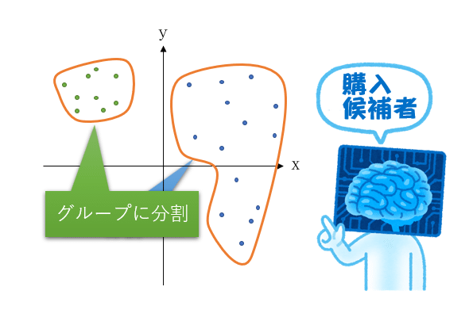

クラスタリングに基づく協調フィルタリング
https://atmarkit.itmedia.co.jp/ait/articles/1901/06/news031.html
概要
クラスタリング
クラスタリングとは、データ内の類似した対象をクラスターとして抽出し、自動的にグルーピングを行う手法である。
協調フィルタリング
協調フィルタリングは、ECサイトや音楽・動画のサブスクリプションサイトにおいて、各ユーザーに対し、他ユーザーの趣味嗜好に基づいて好ましいコンテンツの推薦を行う手法であり、AmazonやYouTubeなどのコンテンツ推薦システムで広く活用されている。 協調フィルタリングにおいては、アイテムベース協調フィルタリングやベイジアン協調フィルタリングなど、さまざまな手法が提案されているが、その中でも、クラスタリングベースの協調フィルタリングは実装が容易であり、効率的に計算できることに加えて、メモリ消費量を低減できるという利点を持っており、さまざまな手法が考案されている。
研究・技術の現状
データの特性に合わせ、さまざまなクラスタリング手法が提案されており、協調フィルタリングへの応用が試みられている。以下にクラスタリング手法の例をいくつか示す。
今後の展望・その研究にどんな夢があるのか
現在主に用いられている協調フィルタリング手法は、非常に大規模なデータを全て参照するアルゴリズムによって実現されている場合が多く、計算量の問題やデータ依存の問題を抱えている。 クラスタリングに基づく協調フィルタリングはまだまだ推薦性能にアドバンテージがあるとは言えないが、高い推薦性能を確立できる手法が提案されれば、現在用いられている推薦システムはさらに高速なものになる。 またデータをクラスタリングする機構が実用化されれば協調フィルタリングへの応用は容易であり、推薦システムを構築することへのハードルが大きく下がるため、協調フィルタリングはどのサービスにも当たり前に実装されているといった未来も考えられる。